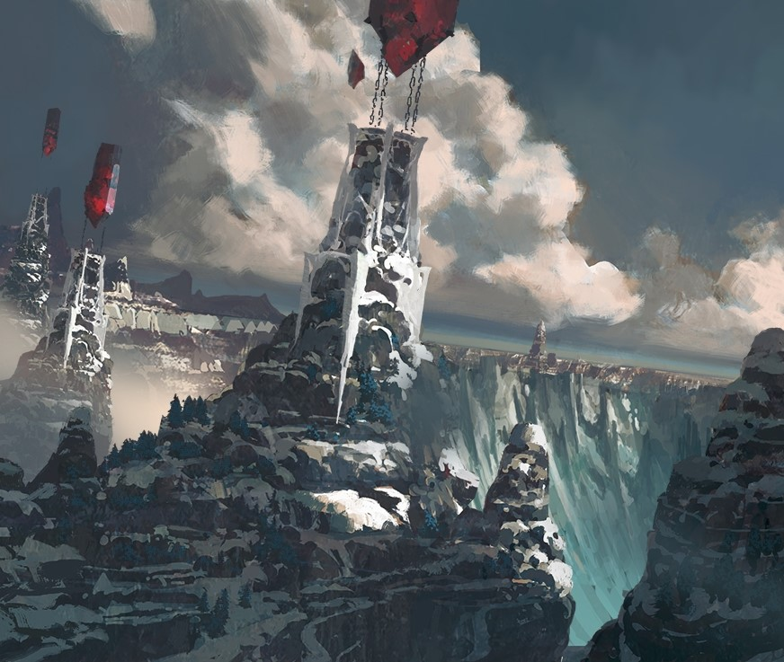
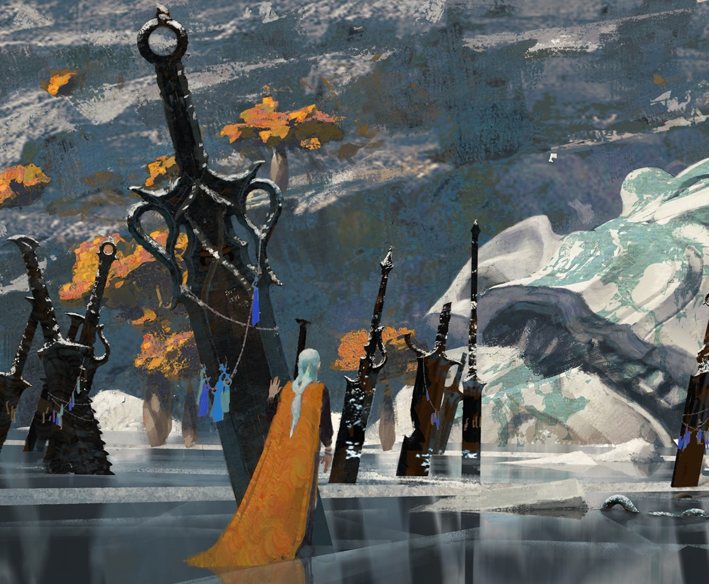
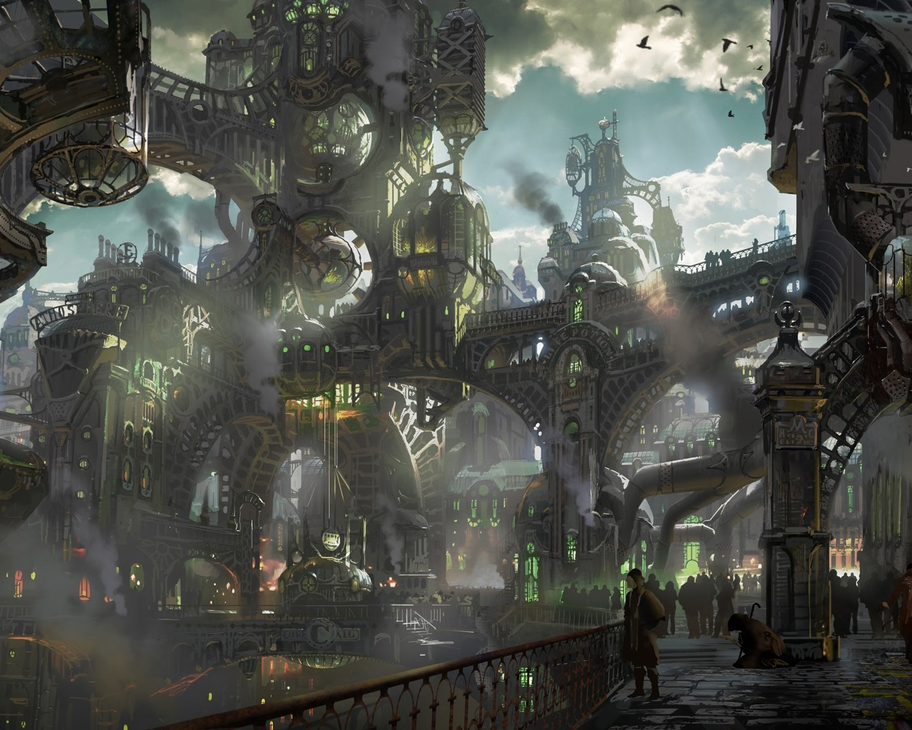
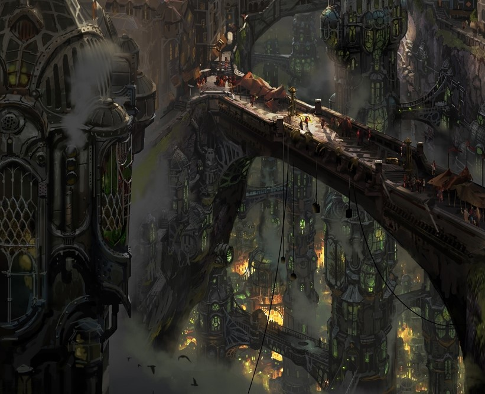
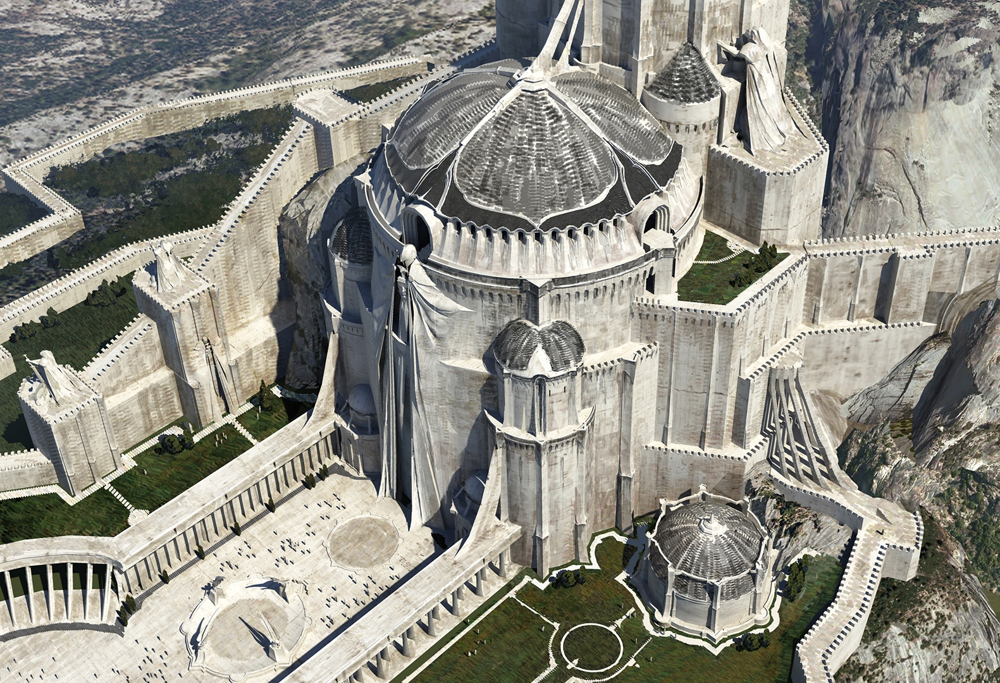
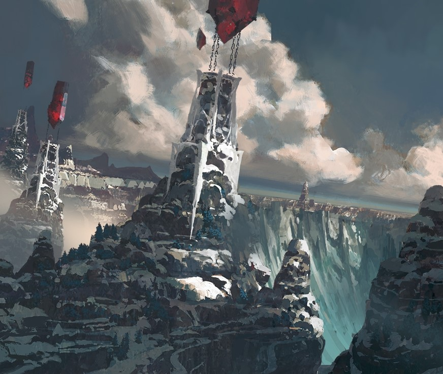
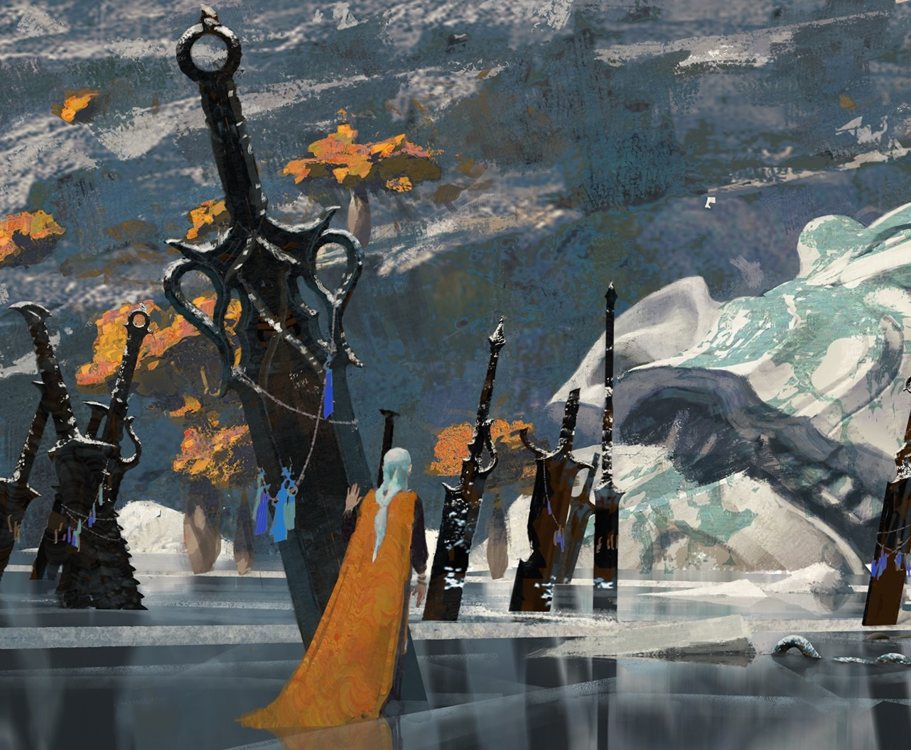
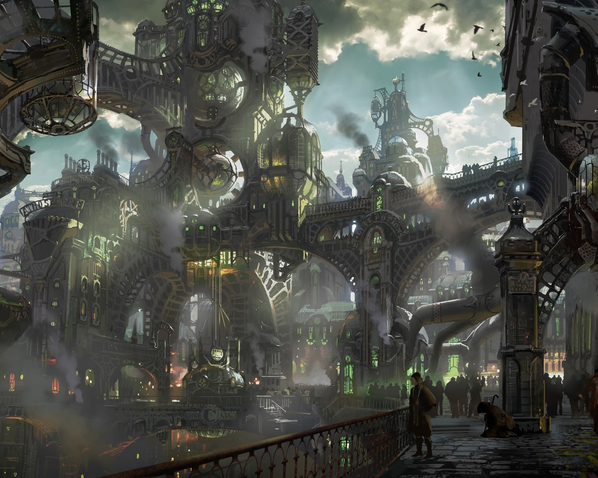
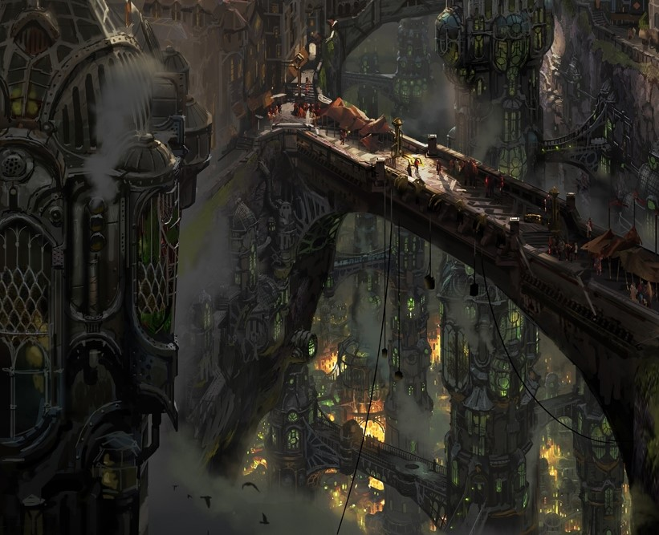
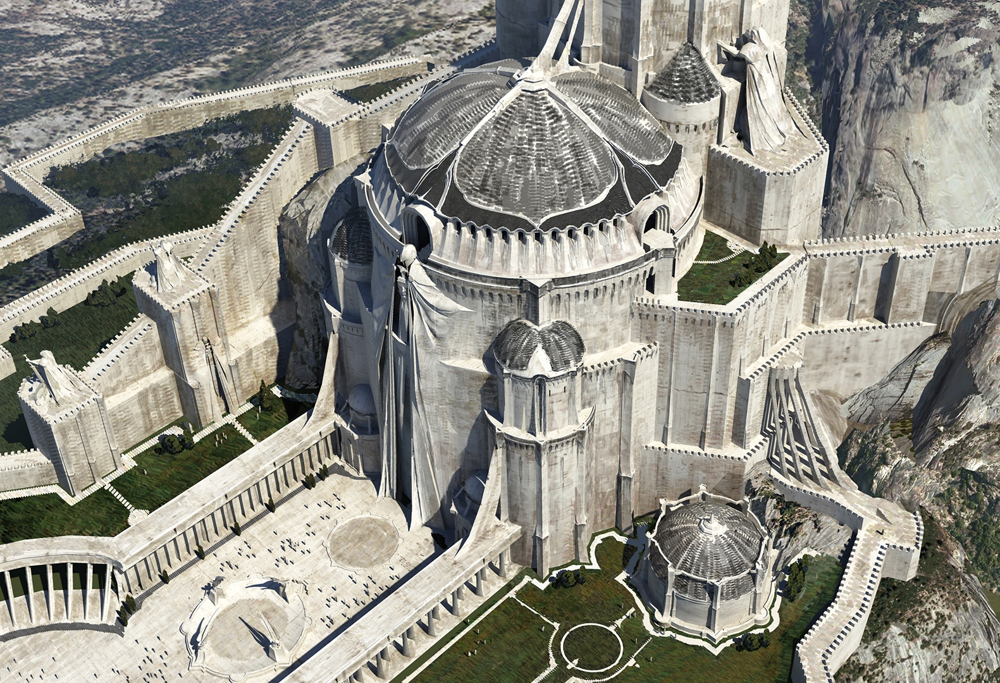

Shadow Isles - None Escape
A Buhru priestess and her acolyte son brave the perils of the Black Mist, to renew the magical wards surrounding the Shadow Isles… but come face to face with a truly enduring foe.
Demacia - Before Glory
Two aspiring young warriors sneak into a Demacian training arena, hoping to walk in the footsteps of their heroes, Garen Crownguard and Fiora Laurent.
Noxus - After Victory
Two aspiring young warriors sneak into a Demacian training arena, hoping to walk in the footsteps of their heroes, Garen Crownguard and Fiora Laurent.
 








